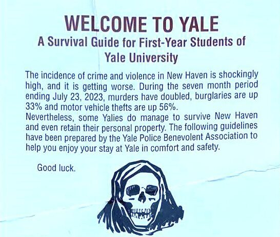
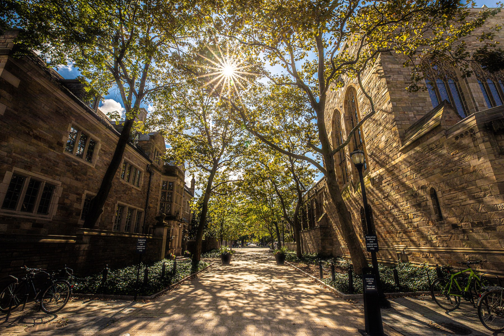
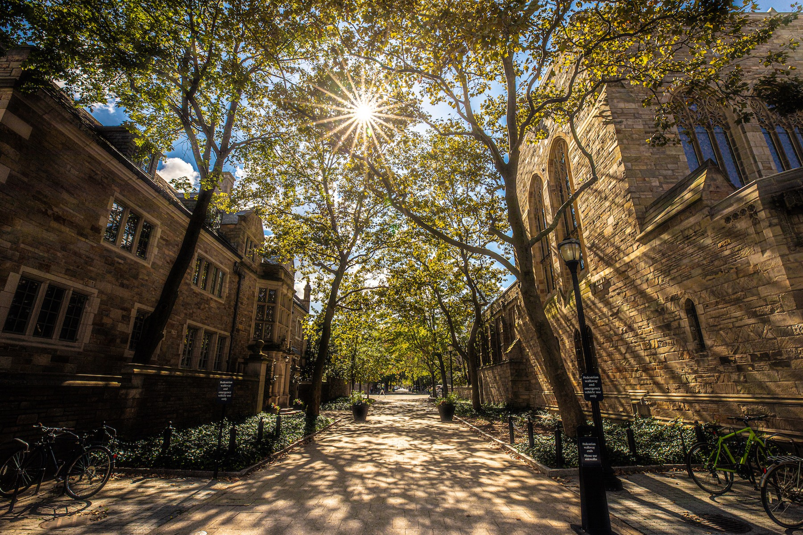

Timothy Dwight V
12th President of Yale, 1886-1899
Peter Salovey
23rd President of Yale, 2013-2024
For fourteen years, I attended school within the confines of the same closed campus — Delhi Public School, Noida, a private school in India. A red-brick wall ran around the entire school, with five gates of entry protected by armed security.
This wall was fortified with glass shards and barbed wire — quintessential examples of hostile architecture for security.
When I came to America for university, I was pleasantly surprised!
At first blush, Yale's campus in New Haven, Connecticut seemed the exact opposite of my school: a loose collection of buildings integrated with the city around it. No boundaries and no exclusion.
I could sense this in the campus map courtesy of the university:
Yet, over time, I have found the walls of a closed (or closing) campus at Yale too.
I haven't come across anything in the vein of the glass shards or barbed wire of my school.
However, I have realized some implicit and unconscious boundaries around Yale that keep New Haveners out and Yalies in.
To understand these implicit boundaries, one must consider Yale's fraught history of relations with New Haven.
Take for instance, how Yale's official stance on New Haven has changed over time...
Timothy Dwight V
12th President of Yale, 1886-1899
Peter Salovey
23rd President of Yale, 2013-2024
This is some text
Beyond the official rhetoric, New Haveners have been a long-standing bogeymen (imagined or not) for Yale students and affiliates. Consider the leaflets handed to first-years of the class of 2027 as they moved into college by the 'Yale Benevolent Police Association':
I have heard many a Yale undergrad complain with similar fervor about New Haven being an "unsafe city." For these friends of mine, their fears manifest in an avoidance of most things New Haven.
The so-called "Yale bubble" is thus made out of a refuge: a place where you are overwhelmingly likely to only see fellow Yale students and not the other.
I argue that Yale's policies accentuate this bubble by disorienting those who venture within its borders.
Yale's undergrads live in residential colleges, each of which can only be accessed with a Yale ID.
This digitized system was implemented in the 90s, following a rise in crime and the high-profile murder of Yale student Christian Prince.
These are, by definition, areas of safety, where any outsiders are considered unwelcome.
But there are some Yale properties that New Haveners (and anyone else for that matter) can walk into, experience, and attend public events.
These include Yale's historic Old Campus and the Sterling Memorial Library - two of Yale's most iconic architectural sights.


But their seeming openness becomes a source of temporal disorientation for everyone but Yale students.
After 6PM, the previously open Sterling library suddenly requires a Yale ID to study inside.
Likewise, the gates of Old Campus slam shut in the evening.
Being affiliated with Yale thus becomes necessary to even exist in seemingly "public" spaces.
A similar need for being Yale-affiliated to exist at Yale manifests itself due to the university's rental practices.
Yale is the biggest landowner in New Haven. Some of its property is residential, with parts of its portfolio managed by Elm Campus Partners.
Here is a snippet of their property in the Park Street district:
Critically, Yale's policy is that only its affiliates can lease from the university. As Yale acquires more property around campus, this means non-Yale tenants are actively pushed out of their homes by the university.
One can observe this aversion to non-Yalies on Yale's campus in Yale's encroachment and development of seemingly public land.
Take, for instance, the junction of High Street and Wall Street, which was purchased by Yale from the City of New Haven and turned into a pedestrian-only walkway.
 

Per Yale, this landscape project was explicitly aimed to convert these streets "from an urban streetscape to a lush and tidy campus landscape."
What this means in practice is that only those who can walk are the ones who can inhabit this space, pushing out drivers.
And when the property around campus is only rented to Yale-affiliates, who does the walkway welcome?
In 2021, Yale signed a deal with the City of New Haven to further develop the North Section of High Street and "fully pedestrianize the street."
The High Street project is scheduled to be completed during the 2025 academic year.
When asked about the university's plans, Peter Salovey said: "It’s time to make that a beautiful entryway to the campus for everyone — the campus community, the New Haven community and visitors from faraway places.” Are they all welcome?
Yale's campus may lack the physical barriers of my school experience, but it still manages to perpetuates a sense of exclusivity through its implicit and unconscious boundaries.
Despite the rhetoric of inclusivity, Yale's practices, from restricted access to public spaces to the eviction of non-affiliates, contribute to the feeling of a closed campus.
At the end of the day, this closed campus and its exclusion of New Haveners may be just another symptom of the thirst for exclusivity at Yale, be it admissions, clubs, or senior societies.
Credits